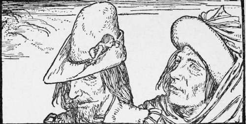

Tom Thumb
Description
This section is from the book "Household Tales by Brothers Grimm", by Brothers Grimm. Also available from Amazon: Household Tales by Brothers Grimm.
Tom Thumb
A poor woodman sat in his cottage one night, smoking his pipe by the fireside, while his wife sat by his side spinning. "How lonely it is, wife," said he, as he puffed out a long curl of smoke, "for you and me to sit here by ourselves, without any children to play about and amuse us, while other people seem so happy and merry with their children!" "What you say is very true," said the wife, sighing, and turning round her wheel; "how happy should I be if I had but one child! If it were ever so small—nay, if it were no bigger than my thumb—I should be very happy, and love it dearly." Now —odd as you may think it—it came to pass that this good woman's wish was fulfilled, just in the very way she had wished it; for, not long afterwards, she had a little boy, who was quite healthy and strong, but was not much bigger than my thumb. So they said, " Well, we cannot say we have not got what we wished for, and, little as he is, we will love him dearly." And they called him Thomas Thumb.
They gave him plenty of food, yet for all they could do he never grew bigger, but kept just the same size as he had been when he was born. Still his eyes were sharp and sparkling, and he soon showed himself to be a clever little fellow, who always knew well what he was about.
One day, as the woodman was getting ready to go into the wood to cut fuel, he said, " I wish I had some one to bring the cart after me, for I want to make haste." "Oh, father," cried Tom, "I will take care of that; the cart shall be in the wood by the time you want it." Then the woodman laughed, and said, "How can that be? you cannot reach up to the horse's bridle." " Never mind that, father," said Tom; "if my mother will only harness the horse, I will get into his ear and tell him which way to go." "Well," said the father, "we will try for once.
When the time came the mother harnessed the horse to the cart, and put Tom into his ear; and as he sat there the little man told the beast how to go, crying out, "Go on!" and "Stop!" as he wanted: and thus the horse went on just as well as if the woodman had driven it himself into the wood. It happened that as the horse was going a little too fast, and Tom was calling out, "Gently! gently!" two strangers came up. "What an odd thing that is!" said one; "there is a cart going along, and I hear a carter talking to the horse, but yet I can see no one." "That is queer, indeed," said the other; "let us follow the cart, and see where it goes." So they went on into the wood, till at last they came to the place where the woodman was. Then Tom Thumb, seeing his father, cried out, " See, father, here I am with the cart, all right and safe! now take me down!" So his father took hold of the horse with one hand, and with the other took his son out of the horse's ear, and put him down upon a straw, where he sat as merry as you please.
The two strangers were all this time looking on, and did not know what to say for wonder. At last one took the other aside, and said, "That little urchin will make our fortune, if we can get him, and carry him about from town to town as a show: we must buy him." So they went up to the woodman, and asked him what he would take for the little man; " He will be better off," said they, "with us than with you." "I won't sell him at all," said the father; "my own flesh and blood is dearer to me than all the silver and gold in the world." But Tom, hearing of the bargain they wanted to make, crept up his father's coat to his shoulder, and whispered in his ear, "Take the money, father, and let them have me ; I'll soon come back to you."
So the woodman at last said he would sell Tom to the strangers for a large piece of gold, and they paid the price. "Where would you like to sit?" said one of them. " Oh, put me on the rim of your hat; that will be a nice gallery for me; I can walk about there, and see the country as we go along." So they did as he wished; and when Tom had taken leave of his father they took him away with them.
They journeyed on till it began to be dusky, and then the little man said, "Let me get down, I'm tired." So the man took off his hat, and put him down on a clod of earth, in a ploughed field by the side of the road. But Tom ran about amongst the furrows, and at last slipt into an old mouse-hole. "Good night, my masters!" said he; "I'm off! mind and look sharp after me the next time." Then they ran at once to the place, and poked the ends of their sticks into the mouse-hole, but all in vain; Tom only crawled farther and farther in; and at last it became quite dark, so that they were forced to go their way without their prize, as sulky as could be.
When Tom found they were gone, he came out of his hiding-place. "What dangerous walking it is," said he, "in this ploughed field! If I were to fall from one of these great clods, I should undoubtedly break my neck." At last, by good luck, he found a large empty snail-shell. "This is lucky," said he, "I can sleep here very well"; and in he crept.
Just as he was falling asleep, he heard two men passing by, chatting together; and one said to the other, " How can we rob that rich parson's house of his silver and gold?" "I'll tell you," cried Tom. "What noise was that ?" said the thief, frightened; " I'm sure I heard some one speak." They stood still listening, and Tom said, " Take me with you, and I'll soon show you how to get t-he parson's money." "But where are you?" said they. "Look about on the ground," answered he, "and listen where the sound comes from." At last the thieves found him out, and lifted him up in their hands. " You little urchin!" they said, "what can you do for us?" "Why I can get between the iron window-bars of the parson's house, and throw you out whatever you want." "That's a good thought," said the thieves; "come along, we shall see what you can do."
When they came to the parson's house, Tom slipt through the window-bars into the room, and then called out as loud as he could bawl, " Will you have all that is here?" At this the thieves were frightened, and said, "Softly, softly! Speak low, that you may not awaken anybody." But Tom seemed as if he did not understand them, and bawled out again, " How much will you have ? shall I throw it all out ?" Now the cook lay in the next room; and hearing a noise she raised herself up in her bed and listened. Meantime the thieves were frightened, and ran off a little way; but at last they plucked up their hearts, and said, "The little urchin is only trying to make fools of us." So they came back and whispered softly to him, saying, " Now let us have no more of your roguish jokes; but throw us out some of the money." Then Tom called out as loud as he could, " Very well! hold your hands ! here it comes."
Continue to:
Tags
fairy tales, children's stories, brothers grimm, household tales